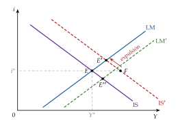
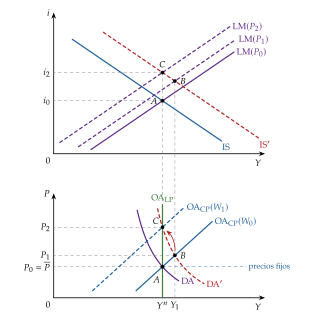
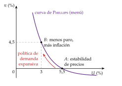
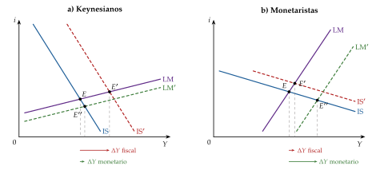
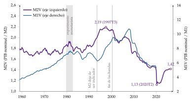
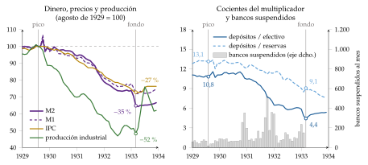

Tema 3.A.5
La síntesis neoclásica. El monetarismo.
Modelo IS-LM, demanda agregada y curva de Phillips de la síntesis; Friedman, renta permanente, tasa natural, regla del k % y Gran Depresión.
Exclusivo Material exclusivo de victorgutierrezmarcos.es y la app Oposición TCEE · DCE. Puedes usarlo libremente para tu estudio personal. No se autoriza su incorporación a otras plataformas, aplicaciones o servicios. Condiciones de uso.
Introducción
Enganche:
«Cada maestrillo tiene su librillo», dice el refrán. Entre febrero de 2020 y febrero de 2021, la cantidad de dinero en sentido amplio (M2) de Estados Unidos creció casi un 27 % (Board of Governors of the Federal Reserve System, 2026c), y en junio de 2022 la inflación llegó al 9,1 %, la más alta desde noviembre de 1981 (U.S. Bureau of Labor Statistics, 2026a). Ante los mismos datos, unos economistas miraban la cantidad de dinero y otros, la brecha de producción y el mercado de trabajo: cada uno con su librillo.
El debate tiene 60 años. En diciembre de 1965 la revista Time tituló «ahora todos somos keynesianos» con una frase de Milton Friedman (Time, 1965), y él aclaró en una carta que la frase completa era «en un sentido, ahora todos somos keynesianos; en otro, nadie es ya keynesiano» (Friedman, 1966).
Detrás está la pregunta de esta exposición: ¿qué separaba de verdad a la síntesis neoclásica del monetarismo: el modelo o la forma de leerlo?
Relevancia:
Para la teoría: el modelo IS-LM y la curva de Phillips aumentada con expectativas siguen siendo el esqueleto de la macroeconomía de los manuales y la primera herramienta para pensar la política fiscal y la monetaria (De Vroey y Hoover, 2004).
Para la política económica: los bancos centrales independientes, con un objetivo de inflación y reglas conocidas, son en buena parte herencia del monetarismo [ver tema 3.A.36].
Para la actualidad: la inflación de 2021-2023 reabrió la discusión sobre cuánto importa el dinero (U.S. Bureau of Labor Statistics, 2026a).
Además, como toda historia del pensamiento económico, enseña a no quedarse con el último manual y a ver por qué unas ideas llegan en unas épocas y no en otras: son 2 de los 4 motivos de Schumpeter (1954).1
Contextualización:
La historia del pensamiento económico avanza por revoluciones: un paradigma domina hasta que acumula anomalías que no sabe explicar y otro lo sustituye (Kuhn, 1962) [ver tema 3.A.1].
Para los neoclásicos, con precios y salarios flexibles, los mercados se vacían: el paro es voluntario o fruto de rigideces y el dinero solo determina el nivel de precios (teoría cuantitativa) [ver tema 3.A.3].
La Gran Depresión fue la anomalía: un paro masivo que no se corregía solo. Keynes (1936) responde con la Teoría general [ver tema 3.A.4]: la demanda efectiva fija la producción, puede haber paro involuntario sin que nada lo corrija y la política fiscal debe sostener la demanda; bajar los salarios, la receta de Pigou, no lo arreglaba.
Pero la Teoría general es un libro en prosa y difícil. Keynes se dirigía en el prefacio «ante todo a mis colegas economistas» y dejaba en sus manos juzgar si tenía razón (Keynes, 1936). Para Mankiw (2006), leerla hoy es una experiencia «a la vez estimulante y frustrante»: quedan demasiados cabos sueltos y el lector se pregunta cuál es, exactamente, el modelo que une todas las piezas.
La respuesta la dan economistas de distintas tendencias (John Hicks, Alvin Hansen, Roy Harrod, James Meade, Franco Modigliani, Paul Samuelson), que traducen a Keynes al lenguaje de los neoclásicos: es la síntesis neoclásica. De los años 40 a finales de los 60 fue la ortodoxia, con el modelo IS-LM y, desde 1960, la curva de Phillips (De Vroey y Hoover, 2004). En 1955, Samuelson (1955, 212) escribía que el 90 % de los economistas estadounidenses habían dejado de ser keynesianos o antikeynesianos para trabajar en esa síntesis.
Desde mediados de los 60 la inflación de Estados Unidos sube, del 1,6 % en 1965 a más del 5 % en 1969 (U.S. Bureau of Labor Statistics, 2026a), y en los 70 llega la estanflación: inflación y paro altos a la vez. La síntesis recibe 3 críticas:
la de los postkeynesianos de Cambridge (Joan Robinson), que rechazan el instrumental neoclásico (la controversia del capital), y la de los neokeynesianos del desequilibrio (Clower, Leijonhufvud, Malinvaud), para quienes la síntesis olvida que Keynes es una teoría del desequilibrio [ver tema 3.A.4];
la monetarista, encabezada por Milton Friedman: la síntesis había olvidado el dinero, confiaba demasiado en la política discrecional e ignoraba las expectativas. Fue la que más influyó en la política económica, y es la de esta exposición.
Problemática:
¿Cómo se convirtió la Teoría general en un modelo con el que hacer política económica?
¿Qué cambia si el dinero importa y los agentes aprenden de sus errores?
¿Puede la política de demanda bajar el paro de forma permanente? ¿Reglas o discrecionalidad?
¿Qué queda hoy de cada escuela?
Estructura: la exposición sigue el orden en que se plantearon las preguntas, primero el paradigma y después su crítica, que empieza en la teoría y termina en la política:
I. La síntesis neoclásica (I): quiénes la formaron y con qué método, su modelo (el IS-LM, del que sale la demanda agregada) y la pieza que lo cerraba, la curva de Phillips;
II. La crítica monetarista: caracterización y formalización (II): la escuela de Friedman, su método y lo que cambia en cada pieza del modelo, primero en la demanda (consumo, inversión y dinero) y después en la oferta (la tasa natural de paro);
III. La crítica monetarista: política económica y valoración (III): las reglas frente a la discrecionalidad, su lectura de la Gran Depresión, el experimento monetarista de 1979-1982 y lo que queda de él.
3.A.5. La síntesis neoclásica. El monetarismo
Introducción
I. La síntesis neoclásica
1. Caracterización general de la síntesis neoclásica según Schumpeter
2. El modelo IS-LM (Hicks, 1937; Modigliani, 1944)
3. La curva de Phillips
II. La crítica monetarista: caracterización y formalización
1. Caracterización general de la escuela monetarista según Schumpeter
2. Formalización del pensamiento de Friedman y comparación con Keynes y la síntesis
III. La crítica monetarista: política económica y valoración
1. Implicaciones de política económica
2. Valoración y aspectos criticados (la contracrítica)
Conclusión
Reparto del cante: introducción, 2′30″; I, 9′30″ (I.1, 1′30″; I.2, 6′; I.3, 2′); II, 8′30″ (II.1, 2′30″; II.2, 6′: demanda, 4′, y oferta, 2′); III, 8′30″ (III.1, 5′30″; III.2, 3′), y conclusión, 1′. La síntesis no baja de 8′ y lleva las fórmulas y los gráficos de la IS, la LM y la demanda agregada: es lo que el tribunal espera ver en la pizarra. La pizarra se organiza en 3 zonas. A la izquierda, el refrán del enganche y las 4 pegatinas, cada una junto a su concepto: «una de cal y otra de arena» (la síntesis), «el hombre es el único animal que tropieza dos veces en la misma piedra» (las expectativas adaptativas), «no se puede engañar a todo el mundo todo el tiempo» (la curva aumentada) y «más vale paso que dure que trote que canse» (la regla del \(k\) %). En el centro, los gráficos que se construyen por capas: el plano \((Y,i)\) del IS-LM, que vuelve en el debate de las pendientes, y el plano \((U,\pi)\), que empieza con el menú de Samuelson y Solow y termina con la curva aumentada. A la derecha, recuadradas y conservadas hasta el final, la IS, la LM y la demanda agregada; después, la curva de Phillips aumentada. Las derivaciones algebraicas están en el anexo A.
I. La síntesis neoclásica
Una vez situada la Teoría general, pasamos a ver cómo la convirtió la síntesis neoclásica en un modelo.
Conclusión anticipada: la síntesis reconcilia a Keynes con los neoclásicos. Su modelo, el IS-LM, es keynesiano a corto plazo, por la rigidez del salario nominal, y clásico a largo plazo. Con la curva de Phillips queda completo: la política de demanda elige, en un menú, cuánta inflación y cuánto paro.
I.1. Caracterización general de la síntesis neoclásica según Schumpeter
Schumpeter reconoce una escuela de pensamiento por 3 rasgos: un líder, unos seguidores y un cuerpo doctrinal propio, con su objeto y su método. La síntesis neoclásica los tiene:
Líderes: John Hicks, que formula el modelo IS-LM (Hicks, 1937), y Paul Samuelson, que lo lleva a los manuales y llama síntesis neoclásica al consenso que estaba surgiendo en la 3.ª edición de su Economics (Samuelson, 1955).
Seguidores: Alvin Hansen, que lleva a Keynes a Estados Unidos desde Harvard; Franco Modigliani, Robert Solow y el propio Samuelson en el MIT; James Tobin en Yale; Lawrence Klein y la Cowles Commission; Jan Tinbergen en los Países Bajos y James Meade en el Reino Unido. Casi todos recibieron después el Premio Nobel.2
Cuerpo doctrinal:
objeto: la renta y el empleo a corto plazo y la política de estabilización. Una economía de mercado sujeta a perturbaciones de demanda, sobre todo de la inversión, que la política puede y debe estabilizar;
método: modelos de equilibrio con pocas ecuaciones, estimados con la nueva econometría. Tinbergen construyó en 1936 el primer modelo macroeconométrico de un país, los Países Bajos, y después contrastó las teorías del ciclo (Tinbergen, 1939); el modelo de Klein y Goldberger (1955) hizo lo mismo para Estados Unidos. Las expectativas son estáticas o exógenas: no reaccionan a la política.
Sus 2 objetivos:
formalizar a Keynes, cuya Teoría general apenas tiene matemáticas;
reconciliarlo con la teoría neoclásica: Keynes para el corto plazo, con salarios y precios rígidos, y los neoclásicos para el largo, con precios flexibles. «Síntesis» quiere decir eso: 2 marcos que se tenían por incompatibles se integran en uno (De Vroey y Duarte, 2013).
Pegatina: «una de cal y otra de arena».
El programa: perfeccionar cada pieza keynesiana con fundamentos y datos, cada una en su tema:
consumo: la función keynesiana, \(C_t=\overline{C}+c\,Y^d_t\), se contrasta con los datos y se completa con la renta relativa y el ciclo vital [ver tema 3.A.33];
inversión: la eficiencia marginal del capital, \(I=\overline{I}-b\,i\), se completa con el acelerador y la \(q\) de Tobin [ver tema 3.A.34];
dinero: la preferencia por la liquidez se fundamenta con los modelos de inventario y de cartera [ver tema 3.A.35].
La política: es la época de la sintonía fina (fine tuning), que combina la política fiscal y la monetaria para mantener la economía cerca del pleno empleo. La fiscal era la preferida; la monetaria se tenía por poco eficaz, y en el Reino Unido el Informe Radcliffe la relegaba a un papel secundario (Committee on the Working of the Monetary System, 1959).3
I.2. El modelo IS-LM (Hicks, 1937; Modigliani, 1944)
a) Idea
Hicks (1937), en «Mr. Keynes and the “Classics”; A Suggested Interpretation», reduce la Teoría general y la teoría clásica a un mismo sistema de ecuaciones para ver en qué se diferencian. Llamó LL a su segunda curva. Modigliani (1944) separa los 2 submodelos: el clásico, con salarios flexibles, y el keynesiano, en el que el paro nace de la rigidez a la baja del salario nominal. La etiqueta IS-LM se generalizó con los libros con los que Alvin Hansen (1949, 1953) llevó el modelo a Estados Unidos.4
Une lo que la cruz keynesiana deja separado, el mercado de bienes y el de dinero, a través del tipo de interés. La pregunta que responde: ¿cómo se determinan a la vez la renta y el tipo de interés a corto plazo, y qué eficacia tienen las políticas fiscal y monetaria?
b) Modelo
i) Supuestos
Economía cerrada, a corto plazo, con un nivel de precios dado, \(P=\overline{P}\): hay recursos ociosos y la producción se ajusta a la demanda.
Sin inflación esperada, \(\pi^e=0\), de modo que el tipo de interés nominal y el real coinciden, \(i=r\).
Tres mercados: bienes, dinero y bonos. Por la ley de Walras, si 2 están en equilibrio, el tercero también: basta con estudiar los bienes (la IS) y el dinero (la LM).
Las piezas de Keynes, en forma lineal:
consumo, \(C=\overline{C}+c\,Y^d\), con \(Y^d=(1-t)\,Y\), \(0<c<1\) la propensión marginal a consumir y \(t\) el tipo impositivo;
inversión, \(I=\overline{I}-b\,i\), con \(b>0\) su sensibilidad al tipo de interés [ver tema 3.A.34];
gasto público exógeno, \(\overline{G}\);
demanda de saldos reales por transacción y especulación, \(k\,Y-h\,i\), con \(k,h>0\) [ver tema 3.A.35], y una oferta monetaria \(M\) que fija el banco central.
ii) Desarrollo
Mercado de bienes: la curva IS. Es el conjunto de pares \((Y,i)\) con los que la producción iguala la demanda, \(Y=C+I+\overline{G}\), o, lo que es lo mismo, la inversión iguala el ahorro (investment = saving). Con \(\overline{A}\equiv\overline{C}+\overline{I}+\overline{G}\) el gasto autónomo, de \(Y=\overline{C}+c\,(1-t)\,Y+\overline{I}-b\,i+\overline{G}\) sale:
\[\text{IS:}\quad Y=\frac{\overline{A}-b\,i}{1-c\,(1-t)},\qquad \overline{A}\equiv\overline{C}+\overline{I}+\overline{G}\tag{1}\]
En palabras: un tipo de interés más bajo sube la inversión y, con el multiplicador, la renta. La IS tiene pendiente negativa, \(\mathrm{d}i/\mathrm{d}Y=-[1-c\,(1-t)]/b\): es más plana cuanto más responde la inversión al tipo (\(b\) grande) y cuanto mayor es el multiplicador.
Una política fiscal expansiva (más \(\overline{G}\), menos \(t\)) o más confianza de los inversores (más \(\overline{I}\)) la desplazan a la derecha.
Mercado de dinero: la curva LM. Es el conjunto de pares \((Y,i)\) con los que la demanda de saldos reales iguala la oferta (liquidity preference = money supply):
\[\text{LM:}\quad \frac{M}{P}=k\,Y-h\,i\quad\Longleftrightarrow\quad i=\frac{1}{h}\Big(k\,Y-\frac{M}{P}\Big)\tag{2}\]
En palabras: si la renta sube, se quiere más dinero para transacciones; con la oferta dada, el tipo de interés tiene que subir para que se quiera menos por especulación. La LM tiene pendiente positiva, \(\mathrm{d}i/\mathrm{d}Y=k/h\): es más plana cuanto más responde la demanda de dinero al tipo (\(h\) grande).
Una expansión monetaria (más \(M/P\)) la desplaza a la derecha.
Equilibrio: la renta y el tipo de interés se determinan a la vez, donde se cortan las 2 curvas (gráfico 1). Sustituyendo la LM en la IS (anexo A), \[Y^*=\frac{h\,\overline{A}+b\,M/P}{h\,[1-c\,(1-t)]+b\,k},\qquad i^*=\frac{k\,\overline{A}-[1-c\,(1-t)]\,M/P}{h\,[1-c\,(1-t)]+b\,k}. \tag{3}\]

Fuente: elaboración propia a partir de Hicks (1937) y Heijdra (2009, cap. 1).
iii) Implicaciones
Política fiscal: más \(\overline{G}\) desplaza la IS a la derecha. Al tipo inicial, la renta crecería con el multiplicador simple, de \(E\) a \(F\); pero con más renta se quiere más dinero, el tipo sube y la inversión cae: es el efecto expulsión (crowding out). El nuevo equilibrio, \(E'\), tiene más renta y un tipo más alto, y el multiplicador es menor que el keynesiano simple: \[\frac{\partial Y^*}{\partial\overline{G}}=\frac{1}{1-c\,(1-t)+b\,k/h}<\frac{1}{1-c\,(1-t)}. \tag{4}\]
Política monetaria: más \(M/P\) desplaza la LM a la derecha; baja el tipo, sube la inversión y, con ella, la renta (de \(E\) a \(E''\)). Es el canal del tipo de interés [ver tema 3.A.37]: \[\frac{\partial Y^*}{\partial(M/P)}=\frac{b}{h\,[1-c\,(1-t)]+b\,k}. \tag{5}\]
Casos extremos: la eficacia de cada política depende de las pendientes, es decir, de \(b\) y de \(h\) (tabla 1):
trampa de la liquidez (\(h\to\infty\), LM horizontal): con el tipo tan bajo que todos esperan que suba, el dinero de más se atesora y el tipo no baja. La política monetaria no sirve; la fiscal tiene todo el multiplicador simple. Es el caso de Keynes en la depresión;
caso clásico (\(h=0\), LM vertical): la demanda de dinero no depende del tipo y la LM es la teoría cuantitativa, \(Y=(1/k)\,M/P\). La política fiscal expulsa tanta inversión como gasto añade; solo la monetaria mueve la renta;
inversión insensible al tipo (\(b=0\), IS vertical): la política monetaria baja el tipo, pero no mueve la inversión.
Entre los extremos, cuánto sirve cada política depende de cuán inclinadas sean las curvas. Es el debate de las pendientes: los keynesianos de la síntesis veían una IS inclinada y una LM plana, y los monetaristas defenderán lo contrario (II.2.1).
| Caso | Curvas | Multiplicador fiscal | Multiplicador monetario |
|---|---|---|---|
| General | IS decreciente, LM creciente | \(\dfrac{1}{1-c\,(1-t)+b\,k/h}\) | \(\dfrac{b}{h\,[1-c\,(1-t)]+b\,k}\) |
| Trampa de la liquidez (\(h\to\infty\)) | LM horizontal | \(\dfrac{1}{1-c\,(1-t)}\) | \(0\) |
| Clásico (\(h=0\)) | LM vertical | \(0\) | \(1/k\) |
| Inversión insensible (\(b=0\)) | IS vertical | \(\dfrac{1}{1-c\,(1-t)}\) | \(0\) |
| Inversión muy sensible (\(b\to\infty\)) | IS horizontal | \(0\) | \(1/k\) |
Fuente: elaboración propia a partir de las ecuaciones del modelo (anexo A). En azul, los casos keynesianos (solo sirve la política fiscal); en verde, los clásicos (solo sirve la monetaria).
Con salarios y precios flexibles, ¿hay paro de equilibrio? Es la pregunta que separa a Keynes de los clásicos, y la síntesis la responde en 3 pasos:
con paro, bajan los salarios y los precios; con \(M\) dado, suben los saldos reales \(M/P\), la LM se desplaza a la derecha, baja el tipo y sube la inversión hasta el pleno empleo: es el efecto Keynes;
falla en los 2 casos de Keynes, la trampa de la liquidez y la inversión insensible al tipo: ahí la deflación no reactiva la demanda;
pero Pigou (1943) y Patinkin (1956) añaden que los saldos reales son riqueza: con precios más bajos, el consumo sube aunque el tipo no baje (\(\overline{C}\) crece con \(M/P\)) y la IS se desplaza a la derecha. Es el efecto saldos reales o efecto Pigou-Patinkin [ver tema 3.A.21]: con precios flexibles, la economía siempre vuelve al pleno empleo, aunque el ajuste sea lento [ver tema 3.A.4].
La conclusión de la síntesis: el paro involuntario existe porque el salario nominal es rígido a la baja (Modigliani, 1944). La teoría de Keynes pasa a ser un caso particular de la neoclásica, el de los salarios rígidos, y no una «teoría general»; pero el corto plazo era keynesiano y había que estabilizarlo.
c) Extensiones
De la IS-LM a la demanda y la oferta agregadas. Si el nivel de precios cambia, el equilibrio IS-LM da, para cada \(P\), la producción que se demanda: es la demanda agregada (DA),
\[\text{DA:}\quad Y=\frac{h\,\overline{A}+b\,M/P}{h\,[1-c\,(1-t)]+b\,k}\tag{6}\]
En palabras: con un nivel de precios más bajo hay más saldos reales, baja el tipo de interés y sube la inversión (el efecto Keynes). La DA tiene pendiente negativa en el plano \((Y,P)\) y se desplaza con la política fiscal (\(\overline{A}\)) y con la monetaria (\(M\)). En la trampa de la liquidez o con \(b=0\) es vertical; el efecto Pigou-Patinkin la vuelve a inclinar.
La oferta agregada (OA) separa el corto plazo del largo (gráfico 2):
a corto plazo, con el salario nominal rígido en \(W_0\), es creciente: un precio más alto baja el salario real, \(W_0/P\), y las empresas contratan y producen más (Modigliani, 1944); con los precios fijos, es horizontal en \(\overline{P}\);
a largo plazo, con salarios flexibles, es vertical en la producción natural, \(Y^n\), la del pleno empleo del mercado de trabajo.
El ajuste: una expansión de demanda sube la producción a corto plazo; con \(Y>Y^n\), salarios y precios suben, \(M/P\) cae, la LM vuelve a la izquierda y la economía regresa a \(Y^n\) con precios más altos. Una expansión monetaria acaba solo en precios (el dinero es neutral a largo plazo) y una fiscal, en un tipo de interés más alto y menos inversión (expulsión total a largo plazo).

Fuente: elaboración propia a partir de Modigliani (1944) y Heijdra (2009, cap. 1).
Economía abierta: con la balanza de pagos, el modelo IS-LM-BP de Mundell y Fleming [ver tema 3.A.32].
La financiación del déficit: con la restricción presupuestaria del sector público, financiar el gasto con dinero o con deuda no da lo mismo (Blinder y Solow, 1973) [ver tema 3.A.39].
d) Evidencia empírica
El IS-LM, con las piezas perfeccionadas de la síntesis, fue el esqueleto de los modelos macroeconométricos con los que se hacía la política: el de Klein y Goldberger (1955) fue uno de los primeros de la economía estadounidense, y en los 60 llegaron modelos de cientos de ecuaciones.
Durante unos 25 años después de la Segunda Guerra Mundial, el IS-LM dominó la macroeconomía y estuvo en el centro de los modelos de los gobiernos y de los bancos centrales (De Vroey y Hoover, 2004). Con precios estables y paro bajo, la sintonía fina parecía funcionar.
e) Valoración
Virtudes:
sencillez: muestra con 2 curvas la interdependencia entre el mercado de bienes y el de dinero;
versatilidad: «la versatilidad del modelo es responsable de su supervivencia», decía Fischer (1986); sirve para la política fiscal y la monetaria, con pleno empleo o con paro, y da resultados cuantitativistas o keynesianos puros según sus pendientes. Por eso sigue en los manuales y en el análisis aplicado.
Críticas, que abren el resto de la exposición:
trabaja con precios dados: no explica la inflación. La pieza que falta es la curva de Phillips (I.3);
un solo canal y un solo activo: el dinero solo actúa a través del tipo de interés de los bonos. Los monetaristas lo verán estrecho (II.2.1);
es estático, con expectativas estáticas y sin microfundamentos: sus parámetros cambian cuando cambia la política. Es la crítica de Lucas (1976) [ver tema 3.A.6];
no explica el paro involuntario como un fallo del mercado: lo atribuye a un salario rígido que no justifica, y para los neokeynesianos del desequilibrio se aleja de Keynes [ver tema 3.A.4].
I.3. La curva de Phillips
Idea: el IS-LM toma el nivel de precios como dado y no explica la inflación, que en los 60 ya no se podía ignorar. La curva de Phillips es la pieza que le faltaba [ver tema 3.A.28].
Desarrollo:
Phillips (1958) encuentra en el Reino Unido, entre 1861 y 1957, una relación inversa y convexa entre el ritmo de crecimiento de los salarios nominales y la tasa de paro.
Samuelson y Solow (1960) la pasan a precios: si las empresas fijan sus precios con un margen fijo sobre el coste laboral unitario, la inflación es el crecimiento de los salarios menos el de la productividad, y en el tramo relevante la curva se aproxima por una recta: \[\pi_t\approx\bar\pi-a\,U_t,\qquad a>0, \tag{7}\] con \(U_t\) la tasa de paro.
Para Estados Unidos presentan un menú de política económica (gráfico 3): la estabilidad de precios exigía en torno a un 5,5 % de paro, y bajarlo al 3 % costaba una inflación del 4,5 % anual.

Fuente: elaboración propia a partir de Samuelson y Solow (1960, 192, fig. 2); el mismo gráfico que el tema de la tasa natural de paro [ver tema 3.A.28].
Implicaciones: con el IS-LM para la demanda y la curva de Phillips para los precios, el modelo de la síntesis está completo. La demanda fija la producción y el empleo, y la curva, la inflación; la política de demanda elige en el menú: menos paro a cambio de más inflación, de forma permanente. Desde entonces, todos los modelos macroeconómicos han tenido que explicar esa relación: para Akerlof (2002), la curva de Phillips es «probablemente la relación macroeconómica más importante».
Valoración:
los propios Samuelson y Solow avisaron de que el menú podía cambiar a largo plazo, pero la lectura que se impuso en los 60 fue la de una disyuntiva permanente;
no contempla la inflación de oferta, en la que más inflación llega con más paro, no con menos;
tiene poca fundamentación teórica y no modeliza las expectativas.
La estanflación de los 70 desplazó la curva hacia arriba, y Friedman y Phelps explicaron por qué (II.2.2).
Recapitulación: la síntesis dio a la política económica un modelo completo y cuantificable, el IS-LM cerrado con la curva de Phillips, y una receta, la sintonía fina. Pero suponía expectativas estáticas y una demanda de dinero inestable, y su menú no resistió la inflación de finales de los 60. Una vez estudiada la síntesis, pasamos a analizar la crítica que la puso en cuestión: la monetarista.
II. La crítica monetarista: caracterización y formalización
Una vez estudiado el paradigma de la síntesis, pasamos a su crítica más influyente: la monetarista.
Conclusión anticipada: el monetarismo no tira el modelo de la síntesis, sino que cambia sus piezas. El consumo y la demanda de dinero son más estables de lo que se creía, el dinero importa más y, sobre todo, no hay un menú permanente entre inflación y paro: la política de demanda no puede bajar el paro de forma duradera.
II.1. Caracterización general de la escuela monetarista según Schumpeter
La escuela monetarista cumple los 3 rasgos de Schumpeter:
Líder: Milton Friedman, profesor en la Universidad de Chicago desde 1946. Desde los años 50 reunió en su taller de dinero y banca a un grupo de discípulos cuyas tesis recogió en Friedman (1956). Recibió el Premio Nobel en 1976 «por sus logros en los campos del análisis del consumo, la historia y la teoría monetarias, y por su demostración de la complejidad de la política de estabilización» (Nobel Prize Outreach, 1976).
Seguidores: Anna Schwartz, Phillip Cagan, Karl Brunner, Allan Meltzer, David Laidler, Michael Parkin y, en la economía abierta, Harry Johnson (Snowdon y Vane, 2005, cap. 4). El nombre de monetarismo lo puso en circulación Brunner (1968).
Cuerpo doctrinal, con un objeto y un método comunes.
Objeto: la macroeconomía y, sobre todo, los efectos de la política económica. Llegan a 3 conclusiones:
el dinero importa (money matters): las variaciones de la cantidad de dinero son la causa principal de las de la renta nominal; a corto plazo mueven la producción y a largo plazo solo los precios. Para Friedman (1963), «la inflación es siempre y en todas partes un fenómeno monetario», en el sentido de que solo puede producirla un aumento de la cantidad de dinero más rápido que el de la producción (Friedman, 1970) [ver tema 3.A.41];
la economía de mercado es estable: las grandes perturbaciones vienen de una política monetaria errática, no del sector privado;
la política discrecional desestabiliza: mejor reglas. Friedman defendió además el libre mercado y un Estado pequeño en Capitalism and Freedom (Friedman, 1962).
Método: Friedman (1953b), «The Methodology of Positive Economics», en 5 rasgos (desarrollo en el anexo B):
la predicción como criterio: la economía debe dar predicciones contrastables, y una teoría se mantiene mientras los datos no la refuten; es afín al falsacionismo de Karl Popper [ver tema 3.A.1];
economía positiva frente a normativa: la positiva estudia lo que es, con independencia de los juicios de valor; las discrepancias de política suelen venir de predicciones distintas, no de valores distintos;
irrelevancia del realismo de los supuestos: una teoría se juzga por sus predicciones; las empresas se comportan como si maximizaran el beneficio, aunque no calculen costes marginales;
sencillez: explicar mucho con poco, con el razonamiento económico por delante del aparato técnico;
enfoque marshalliano: cada problema por separado, con equilibrio parcial y datos, frente al equilibrio general walrasiano (Friedman, 1949).
Expectativas adaptativas: la síntesis las trataba como estáticas; los monetaristas las hacen adaptativas. Cada periodo se corrige la previsión en una fracción \(\gamma\) del último error. Las usaron Cagan (1956) para la inflación esperada en las hiperinflaciones, Friedman (1957) para la renta permanente [ver tema 3.A.33] y Nerlove (1958) para los precios agrícolas de la telaraña, donde amortiguan el ciclo [ver tema 3.A.16]. Para la inflación esperada, \[\pi^e_t=\pi^e_{t-1}+\gamma\,\big(\pi_{t-1}-\pi^e_{t-1}\big)=\gamma\sum_{j=0}^{\infty}(1-\gamma)^j\,\pi_{t-1-j},\qquad \gamma\in(0,1]. \tag{8}\]
En palabras: la inflación esperada es una media de las pasadas, con pesos que decrecen geométricamente. Con \(\gamma=1\) se espera la del periodo anterior, \(\pi^e_t=\pi_{t-1}\).5
Ventaja: los agentes aprenden de sus errores, lo que las estáticas no permitían.
Límite: si la inflación sube año tras año, se quedan siempre cortos y cometen errores sistemáticos. Pegatina: «el hombre es el único animal que tropieza dos veces en la misma piedra». Muth (1961) y la nueva macroeconomía clásica lo resolverán con las expectativas racionales [ver tema 3.A.6].
II.2. Formalización del pensamiento económico de Friedman y comparación con Keynes y la síntesis neoclásica
La crítica monetarista tiene 2 etapas:
hasta 1968, se centra en la demanda: consumo, inversión y, sobre todo, dinero;
desde Friedman (1968), en la oferta: la tasa natural de paro.
En cada pieza, primero la visión de Keynes y la síntesis y después la de Friedman.
II.2.1. Crítica por el lado de la demanda
a) El consumo: la renta permanente
Keynes y la síntesis: el consumo depende de la renta disponible corriente, \(C_t=\overline{C}+c\,Y^d_t\), con \(0<c<1\) (la ley psicológica fundamental) y una propensión media que decrece con la renta.6 De ahí el multiplicador, la eficacia de la política fiscal y, para Hansen, el riesgo de estancamiento secular: si al crecer la renta se ahorra una parte cada vez mayor, la demanda se queda corta (Hansen, 1939) [ver tema 3.A.40].
Friedman: Friedman (1957) sustituye la ley psicológica por la hipótesis de la renta permanente. El consumo permanente es una proporción de la renta permanente que no depende de su nivel, \[C^P_t\propto Y^P_t,\qquad Y^P_t=r\,\overline{W}_t, \tag{9}\] con \(Y^P_t\) el rendimiento de la riqueza total, humana y no humana, que los hogares estiman con expectativas adaptativas.7
Implicaciones:
lo transitorio apenas mueve el consumo: una rebaja temporal de impuestos tiene poco efecto y el multiplicador es menor que el keynesiano;
el consumo es más estable que la renta y la propensión media no cae a largo plazo: no hay estancamiento secular y la economía necesita menos estabilización;
la riqueza entra en el consumo, y con ella el dinero y el tipo de interés: un canal más para la política monetaria.
b) La inversión
Keynes y la síntesis: la inversión es el componente inestable de la demanda (los animal spirits) y responde poco al tipo de interés: \(I=\overline{I}-b\,i\) con \(b\) pequeño, una IS inclinada y una política monetaria débil [ver tema 3.A.34].
Los monetaristas: el gasto sensible al tipo de interés es mucho más amplio que la inversión empresarial en equipo (vivienda, bienes de consumo duradero, existencias) y responde a toda la gama de rendimientos, no solo al de los bonos. En el lenguaje del IS-LM, \(b\) es grande y la IS es más plana: la política monetaria mueve mucho la demanda y la fiscal expulsa mucho gasto privado.
c) La demanda de dinero: la teoría cuantitativa reformulada
Keynes y la síntesis: se demanda dinero por transacción, precaución y especulación; la demanda especulativa depende de las expectativas sobre el tipo de interés, que cambian a menudo. La demanda de dinero es inestable y muy sensible al tipo (\(h\) grande): la LM es plana y la velocidad del dinero, poco fiable [ver tema 3.A.35].
Friedman: Friedman (1956) reformula la teoría cuantitativa como una teoría de la demanda de dinero. El dinero es un activo más de la cartera, y su demanda depende de la riqueza y del rendimiento de las alternativas (Mishkin, 2013, cap. 19): \[\frac{M^D}{P}=f\Big(\underset{+}{Y^P},\ \underset{-}{r_b-r_m},\ \underset{-}{r_e-r_m},\ \underset{-}{\pi^e-r_m},\ \underset{+}{\overline{W}_H/\overline{W}}\Big), \tag{10}\] con \(Y^P\) la renta permanente (la riqueza), \(r_b\), \(r_e\) y \(r_m\) los rendimientos esperados de los bonos, las acciones y el propio dinero, \(\pi^e\) el de los bienes físicos (su revalorización) y \(\overline{W}_H/\overline{W}\) el peso de la riqueza humana, que no se puede vender ni pignorar con facilidad, en la riqueza total.
Es estable: depende sobre todo de la renta permanente, que cambia despacio, y los diferenciales de rendimiento se mueven poco, porque el del dinero sube con los demás. Es poco sensible al tipo de interés (\(h\) pequeño): la LM es inclinada, y la trampa de la liquidez, una curiosidad teórica.
Por tanto, la velocidad es predecible: si \(V\) es estable en \(M\,V=P\,Y\), la cantidad de dinero determina la renta nominal.
d) El mecanismo de transmisión
La síntesis: un solo canal, el del tipo de interés, \(M\uparrow\ \Rightarrow\ i\downarrow\ \Rightarrow\ I\uparrow\ \Rightarrow\ Y\uparrow\), con 2 eslabones débiles (\(h\) grande y \(b\) pequeño).
Los monetaristas: un reajuste de carteras. Con más dinero del que desean, los agentes compran bonos, acciones, capital ya instalado y bienes duraderos; suben sus precios, bajan sus rendimientos, compensa producir capital nuevo y el gasto sube por muchos caminos a la vez. Brunner y Meltzer (1972) lo formalizan con 3 activos (dinero, deuda pública y capital real) y un mercado de crédito: el tipo de interés de los bonos es solo uno de los precios relativos que se mueven (Meltzer, 1995) [ver tema 3.A.37].
e) Evidencia empírica
Friedman y Meiselman (1963) compararon en Estados Unidos (1897-1958) el poder explicativo de la cantidad de dinero y del gasto autónomo del multiplicador: el consumo se explicaba mejor con el dinero.
La réplica de Ando y Modigliani (1965), con otra definición del gasto autónomo, daba el resultado contrario: la evidencia dependía de cómo se midieran las variables, y el debate siguió abierto.
f) El debate de las pendientes
En el IS-LM, el debate de los años 60 se resumió en las pendientes de las 2 curvas (gráfico 4):
keynesianos: IS inclinada (\(b\) pequeño) y LM plana (\(h\) grande): la política fiscal es eficaz, con poca expulsión, y la monetaria, débil;
monetaristas: IS plana (\(b\) grande) y LM inclinada (\(h\) pequeño): la política monetaria es potente y la fiscal se expulsa a sí misma.
Matiz: Friedman nunca aceptó que su tesis dependiera de una LM vertical, y solo usó el IS-LM, en 1970, para hablar el lenguaje de sus críticos. Lo que le separaba de ellos no era una pendiente, sino la estabilidad de la demanda de dinero y la amplitud de la transmisión; él mismo lo explicaba por el método: él era marshalliano y sus críticos, walrasianos (Bordo y Schwartz, 2003).

Fuente: elaboración propia a partir de Bordo y Schwartz (2003) y Heijdra (2009, cap. 1).
II.2.2. Crítica por el lado de la oferta
Idea: la síntesis tomaba la curva de Phillips como un menú estable. En su discurso presidencial ante la American Economic Association, Friedman (1968), y a la vez Phelps (1967, 1968), explican que a los trabajadores y a las empresas les importa el salario real, y que al negociar el nominal prevén la inflación [ver tema 3.A.28].
Modelo: la curva de Phillips aumentada con expectativas,
\[\pi_t=\pi^e_t-a\,\big(U_t-U^n\big)+\varepsilon_t,\qquad a>0\tag{11}\]
con \(\pi^e_t\equiv\mathbb{E}_{t-1}[\pi_t]\) la inflación esperada y \(\varepsilon_t\) las perturbaciones de oferta.
La tasa natural de paro, \(U^n\), es la que hay cuando la inflación es la esperada. Para Friedman, es «el nivel que resultaría del sistema walrasiano de ecuaciones de equilibrio general, siempre que incorpore las características estructurales reales de los mercados de trabajo y de bienes» (Friedman, 1968, 8). La fijan factores reales, no la demanda [ver tema 3.A.26].
Hay una curva de corto plazo para cada inflación esperada (gráfico 5): una expansión de demanda sube los precios; con \(\pi^e\) dada, el salario real cae, se contrata más y el paro baja (de \(A\) a \(B\)). Cuando los trabajadores revisan sus expectativas, el paro vuelve a \(U^n\) con más inflación (\(C\)). A largo plazo, con \(\pi=\pi^e\), la curva es vertical en \(U^n\). Pegatina: «no se puede engañar a todo el mundo todo el tiempo».
Con \(\pi^e_t=\pi_{t-1}\) (\(\gamma=1\) en (8)) y sin perturbaciones de oferta, es la curva aceleracionista: \[\Delta\pi_t\equiv\pi_t-\pi_{t-1}=-a\,\big(U_t-U^n\big). \tag{12}\] Mantener el paro por debajo de \(U^n\) exige una inflación cada vez mayor (de \(C\) a \(D\)). De ahí el nombre de NAIRU, la tasa de paro que no acelera la inflación; su versión con fijación de salarios y precios es posterior [ver tema 3.A.28].

Fuente: elaboración propia a partir de Friedman (1968) y Phelps (1967); el mismo gráfico que el tema de la tasa natural de paro [ver tema 3.A.28].
Implicaciones: «siempre hay una disyuntiva temporal entre inflación y paro; no hay una disyuntiva permanente» (Friedman, 1968, 11). La política de demanda no puede fijar el paro; para bajar \(U^n\) hacen falta políticas de oferta.
Evidencia: la predicción llegó antes que los datos. En Estados Unidos, entre 1969 y 1971 el paro subió del 3,5 % al 6 % y la inflación apenas bajó, del 5,4 % al 4,2 %; en 1975, tras el choque del petróleo, convivían un paro del 8,5 % y una inflación del 9,1 %: la estanflación (U.S. Bureau of Labor Statistics, 2026c, 2026b). Las curvas de corto plazo se habían desplazado hacia arriba con la inflación esperada.
Valoración: separa el corto plazo del largo y pone las expectativas en el centro de la macroeconomía. Pero, con expectativas adaptativas, los agentes se equivocan siempre en la misma dirección mientras la inflación sube: es la puerta de la nueva macroeconomía clásica (Lucas, 1972) [ver tema 3.A.6].
Recapitulación: los monetaristas dejan en pie el IS-LM, pero con otras pendientes y un dinero más potente, y lo cierran con otra curva de Phillips, vertical a largo plazo. Visto qué cambia en el modelo, pasamos a ver qué cambia en la política económica.
III. La crítica monetarista: política económica y valoración
Conclusión anticipada: si la demanda privada es estable, el dinero potente y el paro vuelve solo a su tasa natural, la mejor política es la que no estorba: una regla monetaria sencilla y conocida, tipos de cambio flexibles y un Estado que no intente afinar la coyuntura. La Gran Depresión fue para los monetaristas la prueba de lo que pasa cuando el dinero se gestiona mal; el experimento de 1979-1982, la prueba de los límites de su receta.
III.1. Implicaciones de política económica
III.1.1. Políticas de demanda
La política monetaria es potente a corto plazo, pero actúa con «retardos largos y variables» (Friedman, 1961): cuando hace efecto, la situación ha cambiado, y la sintonía fina acaba amplificando el ciclo que pretende suavizar.
La política fiscal, financiada con deuda, expulsa gasto privado y mueve poco la renta, salvo que la acompañe el dinero; Friedman lo debatió en público con Walter Heller, que había presidido el Consejo de Asesores Económicos de Kennedy (Friedman y Heller, 1969) [ver tema 3.A.38]. El gasto público debía ser, además, pequeño: Friedman (1962) propone un impuesto negativo sobre la renta en lugar de los programas de asistencia y cheques escolares en lugar de la provisión pública.
Lo que la política monetaria puede y no puede hacer (Friedman, 1968):
no puede fijar el tipo de interés ni la tasa de paro más que por poco tiempo: si lo intenta, acaba en una inflación (o una deflación) creciente;
sí puede impedir que el dinero sea una fuente de perturbaciones, dar un marco estable a las decisiones privadas (un nivel de precios predecible) y compensar perturbaciones grandes y claras.
La regla del \(k\) %: Friedman (1960) propone que la cantidad de dinero crezca a un ritmo fijo, año tras año, sin responder al ciclo. Con la ecuación cuantitativa en tasas, \[\gamma_M+\gamma_V=\pi+\gamma_Y, \tag{13}\] si la velocidad es estable, un crecimiento del dinero igual al de la producción a largo plazo da precios estables. La regla es \[\gamma_M=\overline{\gamma}_M, \tag{14}\] con \(\overline{\gamma}_M\) constante, que Friedman situaba entre el 3 y el 5 % anual: el crecimiento de la producción más un margen por la caída tendencial de la velocidad. Tiene 3 ventajas: no depende de previsiones, no da margen a la presión política y ancla las expectativas [ver tema 3.A.36]. Pegatina: «más vale paso que dure que trote que canse».8
La regla en la práctica: el experimento monetarista:
el 6 de octubre de 1979, la Reserva Federal de Paul Volcker pasó a controlar las reservas bancarias para frenar el crecimiento del dinero y dejó que el tipo de interés se moviera libremente (Medley, 2013). El tipo de los fondos federales llegó al 19,10 % de media en junio de 1981 (Board of Governors of the Federal Reserve System, 2026a); la inflación bajó del 14,8 % de marzo de 1980 al 3,8 % de diciembre de 1982, a costa de un paro del 10,8 % en noviembre de 1982 (U.S. Bureau of Labor Statistics, 2026a, 2026c). En octubre de 1982 la Reserva Federal dejó de fijar un objetivo para M1 (Thornton, 2006);
en el Reino Unido, la estrategia financiera a medio plazo (Medium-Term Financial Strategy) del presupuesto del 26 de marzo de 1980 fijó una senda decreciente de objetivos para la oferta monetaria amplia (£M3), empezando por un crecimiento del 7-11 % anual (Howe, 1980);
pero la velocidad dejó de ser estable (gráfico 6). Con la desregulación financiera y los nuevos depósitos remunerados, la de M1, que crecía de forma regular, rompió su tendencia a partir de 1981; la de M2, estable hasta 1990, subió hasta 2,19 en 1997 y cayó a 1,13 en 2020, y hoy es de 1,42 (Federal Reserve Bank of St. Louis, 2026). El Banco de Canadá abandonó sus objetivos de M1 en noviembre de 1982 (Bouey, 1982); en julio de 1993, la Reserva Federal dijo al Congreso que M2 había dejado de ser un indicador fiable (Greenspan, 1993), y en 2000 dejó de fijar bandas para los agregados monetarios (Board of Governors of the Federal Reserve System, 2000).

Fuente: elaboración propia a partir de Federal Reserve Bank of St. Louis (2026); último dato, tercer trimestre de 2026. La velocidad de M1 se corta en 2020 porque la Reserva Federal cambió la definición de M1 en mayo de ese año.
III.1.2. Políticas de oferta
Si la tasa natural la fijan las características estructurales de los mercados, solo se baja con reformas: menos trabas a la contratación y a la movilidad, mejor información sobre las vacantes y menos poder de monopolio de empresas y sindicatos (Friedman, 1968) [ver tema 3.A.28].
La desinflación tiene un coste: con expectativas adaptativas, bajar la inflación exige mantener un tiempo el paro por encima de \(U^n\) [ver tema 3.A.41]. Los monetaristas preferían hacerlo de forma gradual y anunciada, para que las expectativas se ajustaran antes.
III.1.3. Economía abierta
Friedman (1953a) defiende los tipos de cambio flexibles cuando regía Bretton Woods: ajustan los precios relativos entre países sin necesidad de deflación ni de controles y dejan a cada país elegir su política monetaria [ver tema 3.B.15]. El fin de Bretton Woods (1971-1973) llevó a la flotación generalizada [ver tema 3.B.20].
Harry Johnson desarrolla, desde Chicago y la London School of Economics, el enfoque monetario de la balanza de pagos: con tipo de cambio fijo, un desequilibrio exterior es un exceso de oferta o de demanda de dinero, que se corrige solo con la variación de las reservas (Frenkel y Johnson, 1976) [ver tema 3.B.12].
III.1.4. Teoría de los ciclos: la Gran Depresión
Keynes y la síntesis: la Gran Depresión mostraba que la demanda privada puede hundirse y quedarse hundida; como en la trampa de la liquidez, la política monetaria no servía y la salida era fiscal.
Friedman y Schwartz: en el capítulo 7 de A Monetary History of the United States, 1867-1960 (Friedman y Schwartz, 1963) dan la vuelta al argumento con los datos. La Gran Contracción de 1929-1933 no prueba la impotencia de la política monetaria, sino su poder: es «un trágico testimonio de la importancia de las fuerzas monetarias» (Friedman y Schwartz, 1965).
Los hechos (gráfico 7): del pico de agosto de 1929 al fondo de marzo de 1933, la cantidad de dinero cayó un 35 %, de 46.280 a 29.970 millones de dólares. Más de una quinta parte de los bancos comerciales suspendió pagos y, con fusiones y liquidaciones, su número pasó de 24.504 en junio de 1929 a 13.949 en junio de 1933 (Friedman y Schwartz, 1963; Board of Governors of the Federal Reserve System, 2026d). Entre 1929 y 1933, el PIB real cayó un 26 % y los precios de consumo, un 25 % (Bureau of Economic Analysis, 2026; U.S. Bureau of Labor Statistics, 2026a).9
El mecanismo: la base monetaria no cayó; por sí sola habría elevado la cantidad de dinero un 17,5 %. Lo que la hundió fue el multiplicador: con las quiebras, el público quiso más efectivo y menos depósitos (el cociente depósitos/efectivo bajó de 10,8 a 4,4) y los bancos, más reservas (el cociente depósitos/reservas bajó de 13,1 a 9,1) (Friedman y Schwartz, 1965) [ver tema 3.A.36].
La culpa: la Reserva Federal no compró títulos ni prestó la liquidez que habría frenado los pánicos bancarios. Si hubiera actuado a finales de 1930 o en 1931, la contracción habría sido menos grave y, muy probablemente, habría acabado «mucho antes» (Friedman y Schwartz, 1965).10

Fuente: elaboración propia a partir de National Bureau of Economic Research (2026a) (series de Friedman y Schwartz), U.S. Bureau of Labor Statistics (2026a), Board of Governors of the Federal Reserve System (2026b) y National Bureau of Economic Research (2026b). La serie de bancos suspendidos acaba en febrero de 1933. Variaciones del gráfico de pico a fondo con datos mensuales; en el texto, medias anuales de 1929-1933 y PIB real.
La lección aprendida: Ben Bernanke estudió la crisis financiera de los años 30 siguiendo a Friedman y Schwartz, y añadió el canal del crédito: la quiebra de los bancos destruyó información y préstamos, no solo dinero (Bernanke, 1983) [ver tema 3.A.37].11 En el 90 cumpleaños de Friedman, siendo gobernador de la Reserva Federal, les dijo a él y a Schwartz: «Sobre la Gran Depresión: tenéis razón, lo hicimos nosotros. Lo sentimos mucho. Pero, gracias a vosotros, no lo volveremos a hacer» (Bernanke, 2002, traducción propia). En 2008, ya como presidente, inundó de liquidez el sistema: esta vez la cantidad de dinero no cayó.
El ciclo monetario: Friedman (1964) describe la producción como una cuerda pegada a un techo, el potencial, de la que de vez en cuando se tira hacia abajo (el plucking model), y lo contrasta en Friedman (1993): las recesiones son caídas por debajo del techo, provocadas a menudo por perturbaciones monetarias, y la amplitud de cada caída predice la de la recuperación que la sigue, pero no al revés [ver tema 3.A.42].
Valoración: A Monetary History rehabilitó las explicaciones monetarias del ciclo, que la revolución keynesiana había arrinconado; treinta años después, Lucas (1994) le dedicó una reseña elogiosa.
III.2. Valoración y aspectos criticados (la contracrítica)
Virtudes: lo que aportó el monetarismo y por qué lo seguimos estudiando:
la tasa natural de paro y la curva de Phillips vertical a largo plazo [ver tema 3.A.28];
una política monetaria centrada en el control de la inflación, responsabilidad del banco central;
las expectativas en el centro de los modelos;
las reglas frente a la discrecionalidad, con los retardos de la política, una idea que llevó más lejos Lucas.
La contracrítica en la práctica: las contracciones monetarias de finales de los 70 y principios de los 80 costaron mucho en renta y empleo. En Estados Unidos, el paro del 10,8 % de 1982 fue el más alto de la posguerra hasta entonces (U.S. Bureau of Labor Statistics, 2026c), aunque también pesó el segundo choque del petróleo. Kaldor (1970, 1982) atribuyó al monetarismo la recesión británica de 1980-1981 y sostuvo que la oferta monetaria es endógena: la crea el crédito que piden las empresas, y el banco central no la controla.
La contracrítica en la teoría:
causación inversa: que el dinero se adelante a la renta no prueba que la cause. Tobin (1970) mostró que un modelo keynesiano en el que el dinero responde a la renta esperada genera los mismos adelantos que los monetaristas tomaban por causalidad;
la cantidad de dinero como objetivo intermedio: es la ley de Goodhart: toda regularidad estadística tiende a romperse cuando se la usa para el control (Goodhart, 1975). La relación entre dinero y renta se deshizo justo cuando los bancos centrales se apoyaron en ella; si las perturbaciones vienen de la demanda de dinero, estabiliza mejor fijar el tipo de interés (Poole, 1970). Los bancos centrales pasaron a reglas de tipo de interés, como la de Taylor [ver tema 3.A.36];
la renta permanente no se observa, y es difícil de contrastar;
las expectativas adaptativas permiten errores sistemáticos: la nueva macroeconomía clásica las sustituye por las racionales de Muth (1961) y llega a una conclusión aún más dura contra la estabilización (Lucas, 1972) [ver tema 3.A.6].
El legado: la nueva síntesis neoclásica de los 90, la nueva economía keynesiana con expectativas racionales, recoge buena parte de las ideas monetaristas (tasa natural, expectativas, reglas, inflación como objetivo) con las rigideces de la síntesis (Goodfriend y King, 1997) [ver tema 3.A.7]. Como resume Mankiw (2006), esa nueva síntesis es la que usan hoy los bancos centrales.
La paradoja final: Friedman cambió los términos del debate y puso a los keynesianos a la defensiva, pero lo que vino después no fue el monetarismo, sino la nueva macroeconomía clásica, walrasiana y con expectativas racionales. Muchos monetaristas descubrieron entonces que, marshallianos como sus viejos adversarios keynesianos, tenían más en común con ellos que con los nuevos clásicos (De Vroey, 2016).
| Síntesis neoclásica | Monetarismo | |
|---|---|---|
| Consumo | \(C_t=\overline{C}+c\,Y^d_t\): renta corriente | \(C^P_t\propto Y^P_t\): renta permanente |
| Inversión | poco sensible al tipo: IS inclinada | gasto amplio y sensible: IS plana |
| Demanda de dinero | inestable, \(h\) grande: LM plana | estable, \(h\) pequeño: LM inclinada |
| Transmisión | tipo de interés de los bonos | reajuste de toda la cartera |
| Expectativas | estáticas o exógenas | adaptativas |
| Curva de Phillips | menú permanente | vertical a largo plazo en \(U^n\) |
| Economía privada | inestable | estable |
| Política preferida | fiscal, discrecional (sintonía fina) | monetaria, con reglas (\(k\) %) |
| Tipo de cambio | fijo (Bretton Woods) | flexible |
| Gran Depresión | demanda insuficiente | contracción monetaria |
Fuente: elaboración propia.
Recapitulación: el monetarismo convirtió su crítica en una receta, reglas y no sintonía fina, que dominó la política a principios de los 80 y se rompió con la velocidad del dinero. Lo que sobrevivió, la tasa natural, las expectativas y las reglas, pasó a la macroeconomía posterior.
Conclusión
Recapitulación: en conclusión, la síntesis neoclásica convirtió a Keynes en un modelo, el IS-LM, cerrado con la curva de Phillips: Keynes a corto plazo, los neoclásicos a largo y una política de demanda que elegía en un menú de inflación y paro. El monetarismo mantuvo el modelo, pero cambió sus piezas: un consumo y una demanda de dinero estables, un dinero potente y una curva de Phillips vertical a largo plazo. Harry Johnson (1971) lo llamó «contrarrevolución» monetarista, una expresión que el propio Friedman (1970) había usado un año antes.
Relevancia: la estanflación de los 70 dio la razón a la crítica, y la desinflación de 1979-1982 y la inestabilidad de la velocidad, a la contracrítica. Lo que sobrevivió es el suelo de los bancos centrales de hoy.
Extensiones: el desequilibrio [ver tema 3.A.4]; las expectativas racionales y la crítica de Lucas [ver tema 3.A.6]; la nueva economía keynesiana, que microfundamenta las rigideces de la síntesis [ver tema 3.A.7]; la demanda de dinero [ver tema 3.A.35]; el diseño de la política monetaria, de la regla del \(k\) % a la de Taylor [ver tema 3.A.36], y la tasa natural y la NAIRU [ver tema 3.A.28].
Opinión: las 2 escuelas tenían parte de razón. La síntesis acertó en que la demanda importa a corto plazo y en que la política puede estabilizar; el monetarismo, en que no hay atajos permanentes contra el paro y en que el dinero mal gestionado causa las peores crisis. Se equivocó en la herramienta: la cantidad de dinero resultó un mal objetivo.
Idea final: «cada maestrillo tiene su librillo», pero el libro era el mismo. Keynesianos y monetaristas compartían el IS-LM y la curva de Phillips; lo que los separaba eran las pendientes, la estabilidad del dinero y las expectativas. Por eso, como dijo Friedman, en un sentido todos somos hoy keynesianos y, en otro, nadie lo es ya: los bancos centrales leen el mismo libro con un librillo que ha tomado páginas de los 2.
A. Anexo: el modelo IS-LM paso a paso
Las 2 curvas. De la IS (1) y la LM (2), \[\begin{aligned} \big[1-c\,(1-t)\big]\,Y&=\overline{A}-b\,i, \tag{15}\\ i&=\frac{1}{h}\Big(k\,Y-\frac{M}{P}\Big). \tag{16} \end{aligned}\]
El equilibrio. Sustituyendo (16) en (15) y multiplicando por \(h\), \[\big\{h\,\big[1-c\,(1-t)\big]+b\,k\big\}\,Y=h\,\overline{A}+b\,\frac{M}{P}.\] Con \(D\equiv h\,[1-c\,(1-t)]+b\,k>0\) (local de este anexo), \[Y^*=\frac{h\,\overline{A}+b\,M/P}{D},\qquad i^*=\frac{k\,Y^*-M/P}{h}=\frac{k\,\overline{A}-[1-c\,(1-t)]\,M/P}{D},\] que es (3).
Multiplicadores: \[\frac{\partial Y^*}{\partial\overline{G}}=\frac{h}{D}=\frac{1}{1-c\,(1-t)+b\,k/h},\qquad \frac{\partial i^*}{\partial\overline{G}}=\frac{k}{D}>0,\] \[\frac{\partial Y^*}{\partial(M/P)}=\frac{b}{D},\qquad \frac{\partial i^*}{\partial(M/P)}=-\frac{1-c\,(1-t)}{D}<0.\]
El efecto expulsión. La inversión cae \(\Delta I=-b\,\Delta i^*=-(b\,k/D)\,\Delta\overline{G}\). La renta crece lo que dice el multiplicador simple aplicado al gasto neto de la expulsión: \[\frac{\Delta\overline{G}+\Delta I}{1-c\,(1-t)}=\frac{\Delta\overline{G}\,(D-b\,k)}{D\,[1-c\,(1-t)]}=\frac{h}{D}\,\Delta\overline{G},\] porque \(D-b\,k=h\,[1-c\,(1-t)]\).
Los casos extremos (tabla 1), tomando límites:
\(h\to\infty\): \(h/D\to 1/[1-c\,(1-t)]\) y \(b/D\to 0\) (trampa de la liquidez);
\(h=0\): \(D=b\,k\), \(h/D=0\) y \(b/D=1/k\); es decir, \(Y=(1/k)\,M/P\), la teoría cuantitativa con \(V=1/k\) (caso clásico);
\(b=0\): \(D=h\,[1-c\,(1-t)]\), \(h/D=1/[1-c\,(1-t)]\) y \(b/D=0\) (inversión insensible);
\(b\to\infty\): \(h/D\to 0\) y \(b/D\to 1/k\) (inversión muy sensible).
La demanda agregada. \(Y^*\) en función de \(P\) es la DA (6), con pendiente \[\frac{\partial Y^*}{\partial P}=-\frac{b}{D}\,\frac{M}{P^2}<0,\] que se anula si \(b=0\) o si \(h\to\infty\): la DA es vertical. Con el efecto saldos reales, el gasto autónomo depende de los saldos reales, \(\overline{A}(M/P)\) con \(\overline{A}'>0\), y \[\frac{\partial Y^*}{\partial P}=-\frac{h\,\overline{A}'+b}{D}\,\frac{M}{P^2}<0\] aun con \(b=0\), y con \(h\to\infty\) tiende a \(-\overline{A}'\,M/\{[1-c\,(1-t)]\,P^2\}<0\): la deflación siempre acaba elevando la demanda (efecto Pigou-Patinkin).
∎
B. Anexo: la metodología de Friedman
La predicción como criterio: para Friedman (1953b), la economía positiva es una ciencia que debe abordar problemas concretos y dar predicciones que se puedan contrastar con los datos; una teoría se acepta mientras no la refuten. Es afín al falsacionismo de Popper (una teoría no se puede verificar, pero sí refutar con una observación incompatible) [ver tema 3.A.1], aunque con un instrumentalismo que Popper no compartía: las teorías son instrumentos para predecir, no descripciones verdaderas del mundo (Boland, 1979).
Economía positiva frente a normativa: Friedman defiende que la economía positiva puede ser independiente de cualquier postura ética y que la normativa debe apoyarse en ella. Frente a él, Gunnar Myrdal sostenía que los conceptos económicos llevan siempre valoraciones implícitas, que hay que hacer explícitas (Myrdal, 1953).12 Las recomendaciones de Friedman se presentan así: controlar el crecimiento del dinero se deriva de un resultado positivo, que el dinero es lo que más explica la inflación.
Irrelevancia del realismo de los supuestos: lo que cuenta es lo bien que predice una teoría, no lo realistas que sean sus supuestos. Sus ejemplos: el buen jugador de billar golpea como si resolviera las ecuaciones de la mecánica, y las empresas se comportan como si maximizaran el beneficio, aunque no calculen ingresos ni costes marginales: las que no lo hacen desaparecen. Samuelson lo criticó como el «giro F» (F-twist): unos supuestos falsos no se vuelven inocuos porque el modelo prediga bien (Samuelson, 1963).
Sencillez: una buena teoría explica mucho con poco; Friedman prefiere los modelos pequeños y el razonamiento económico verbal al detalle técnico.
Enfoque marshalliano: la economía como «máquina para descubrir verdades concretas», que estudia cada problema por separado, con equilibrio parcial y datos, frente al equilibrio general walrasiano, que veía como un ejercicio formal (Friedman, 1949). Paradójicamente, Brunner y Meltzer, sus aliados, trabajaban en la tradición walrasiana (Bordo y Schwartz, 2003).
C. Anexo: aspectos para el test
Fechas y obras:
Keynes, Teoría general (1936); Hicks, «Mr. Keynes and the “Classics”; A Suggested Interpretation» (1937, curvas IS y LL); Modigliani (1944, salarios rígidos); Hansen, Monetary Theory and Fiscal Policy (1949) y A Guide to Keynes (1953); Samuelson, Economics (1.ª ed., 1948; «síntesis neoclásica» en la 3.ª, 1955); Klein y Goldberger (1955); Phillips (1958); Samuelson y Solow (1960);
Friedman: «The Methodology of Positive Economics» y «The Case for Flexible Exchange Rates» (1953), «The Quantity Theory of Money: A Restatement» (1956), A Theory of the Consumption Function (1957), A Program for Monetary Stability (1960), Capitalism and Freedom (1962), «The Role of Monetary Policy» (1968, discurso de diciembre de 1967) y The Optimum Quantity of Money (1969); Friedman y Schwartz, A Monetary History of the United States, 1867-1960 (1963);
Cagan (1956) y Nerlove (1958), expectativas adaptativas; Phelps (1967, 1968); Brunner (1968), el nombre «monetarismo»; Johnson (1971), «contrarrevolución»; Tobin (1970), causación inversa; Poole (1970); Goodhart (1975).
Nobel: Friedman en 1976; Myrdal y Hayek en 1974 («interdependencia» de los fenómenos económicos, sociales e institucionales); Bernanke en 2022 (Nobel Prize Outreach, 1976, 1974, 2022).
Trampas:
Hicks llamó LL a su curva monetaria; el nombre IS-LM se generalizó con Hansen;
la trampa de la liquidez es la LM horizontal (\(h\to\infty\)); el caso clásico, la LM vertical (\(h=0\));
los monetaristas: IS plana y LM inclinada; los keynesianos, al revés;
la regla del \(k\) % (1960) no es la «regla de Friedman» de la cantidad óptima de dinero (1969);
Keynes no supuso constante la propensión marginal a consumir: fue la síntesis;
el efecto Keynes actúa por el tipo de interés (desplaza la LM); el de Pigou-Patinkin, por la riqueza (desplaza la IS);
la curva de Phillips de 1958 relaciona el paro con los salarios nominales; la de Samuelson y Solow, con los precios;
en la Gran Contracción la base monetaria subió; lo que cayó fue el multiplicador.
Preguntas de test de exámenes anteriores, en el simulador: https://www.
victorgutierrezmarcos. .es/ oposicion/ temario/ primer- ejercicio/ test/ simulador. html
Bibliografía
Los otros 2: la historia es fuente de ideas (principios que no fructificaron pueden orientar la investigación de hoy) y muestra cómo se desplazan las fronteras de la ciencia (cada época trae sus problemas y su forma de afrontarlos). La evolución del pensamiento económico resulta de la interacción de varios factores: el contexto económico de cada momento, el pensamiento anterior y los avances de otras disciplinas, como la filosofía, las matemáticas, la física o la biología. Conocerla permite entender las raíces del pensamiento actual, analizar los fenómenos económicos pasados y presentes y valorar los distintos programas de investigación.↩︎
Tinbergen (1969, con Frisch), Samuelson (1970), Hicks (1972, con Arrow), Meade (1977, con Ohlin), Klein (1980), Tobin (1981), Modigliani (1985) y Solow (1987).↩︎
Hubo excepciones: Modigliani dio desde su modelo de 1944 más peso a la política monetaria que la mayoría de los autores de la síntesis.↩︎
Harrod, Meade y Hicks propusieron en 1936, en la reunión de la Econometric Society de Oxford, sistemas de ecuaciones muy parecidos para resumir la Teoría general (Harrod, 1937; Meade, 1937; Hicks, 1937). Las ecuaciones ya estaban en Harrod, a quien Keynes había enviado partes del libro para que las comentara, pero fue el gráfico de Hicks el que caló. Por eso, como subraya Fonseca (s. f.), el IS-LM se lee mejor como la síntesis de varios intentos de formalizar a Keynes que como una pieza aislada (Young, 1987). El propio Hicks se distanció de él al final de su vida: le reprochaba ser un modelo de equilibrio para un problema que, en Keynes, es de tiempo y de expectativas (Hicks, 1980).↩︎
En la renta permanente, Friedman (1957) usa la misma regla con la observación del propio periodo, \(Y^P_t=Y^P_{t-1}+\gamma\,(Y_t-Y^P_{t-1})\) [ver tema 3.A.33]; aquí, como en la telaraña [ver tema 3.A.16] y en la curva aceleracionista [ver tema 3.A.28], la previsión se forma con el error del periodo anterior. Es la misma regla con otro calendario. La \(\gamma\) sin subíndice es este peso; con subíndice, \(\gamma_X\) es la tasa de crecimiento de \(X\).↩︎
Keynes no supuso que la propensión marginal a consumir fuera constante: «la propensión marginal a consumir no es constante para todos los niveles de empleo, y es probable que, por regla general, tienda a disminuir a medida que el empleo aumenta» (Keynes, 1936, cap. 10, apdo. III; traducción propia). La recta con \(c\) constante es una simplificación posterior de la síntesis.↩︎
Es la \(C^P_t=k\,Y^P_t\) de Friedman (1957), con \(k\) función del tipo de interés, de la composición de la riqueza y de los gustos [ver tema 3.A.33]. Aquí no se escribe esa \(k\) para no confundirla con la \(k\) de la LM, que mide cuánto responde a la renta la demanda de dinero.↩︎
No hay que confundirla con la regla de Friedman de la cantidad óptima de dinero (Friedman, 1969): como producir dinero no cuesta casi nada, su coste de oportunidad, el tipo de interés nominal, debería ser cero, lo que exige una deflación igual al tipo de interés real [ver tema 3.A.41].↩︎
Friedman y Schwartz, con las cuentas nacionales de los años 60, daban una caída de la renta real del 36 %. Las revisiones posteriores de la contabilidad nacional la han suavizado; aquí se usan los datos actuales del BEA.↩︎
La contracción no vino precedida de una expansión monetaria: el dinero llevaba casi 2 años sin crecer, porque la Reserva Federal había endurecido su política en 1928-1929 para frenar la especulación bursátil (Friedman y Schwartz, 1965). La tesis de que una política monetaria laxa en los años 20 infló una burbuja que estalló en 1929 es de la escuela austriaca (Rothbard, 1963), no de Friedman y Schwartz.↩︎
Bernanke recibió el Premio Nobel en 2022, con Douglas Diamond y Philip Dybvig, «por la investigación sobre bancos y crisis financieras» (Nobel Prize Outreach, 2022). Propuesto en 2005, presidió la Reserva Federal de 2006 a 2014.↩︎
Myrdal recibió el Premio Nobel en 1974, con Friedrich Hayek, «por sus trabajos pioneros en la teoría del dinero y de las fluctuaciones económicas y por su penetrante análisis de la interdependencia de los fenómenos económicos, sociales e institucionales» (Nobel Prize Outreach, 1974).↩︎